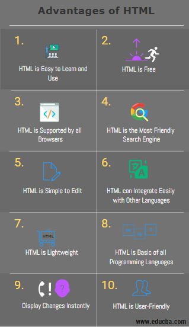

I started learning html one week ago and I am proud of my progress so far. HTML is the programming language used to create a website's basic foundation. This means learning the language will offer you comprehensive knowledge of web pages' working and other essential concepts.
These are the projects I completed in my first week of coding

This was my first web page where I introduced myself to the world.
I used HTML to execute this project. Below is a link to Hello world project!
hello-worldAs I progressed in my coding journey, I made another page to introduce my pets.
The project was written using HTML. Click on link below to access the project!
My petsThis pages highlights some of the topics am going to learn at Moringa School.
The Project was written using HTML. Click on link below to access the project.
My first websiteOn this page you will learn about a typical village farm
I used HTML to execute the project. Click on link below to access the project
The FarmAs the title of the page states, My name is Stephen Chege. A man( ooh yes I am a binary) open to all possibilities that comes his way. Am a graduate of JKUAT also known as Juja boys in those days and have several years of work experience. I started off as a banker and now am in Telecommunication which is a very dynamic and beautiful field.
Being digital (has several meaning depending with audience) is a must in this day and age. It's this realization that has pushed me to continually want to learn more about digitizing things which you cannot do without learning programming among many other fields.
I have interest in several areas